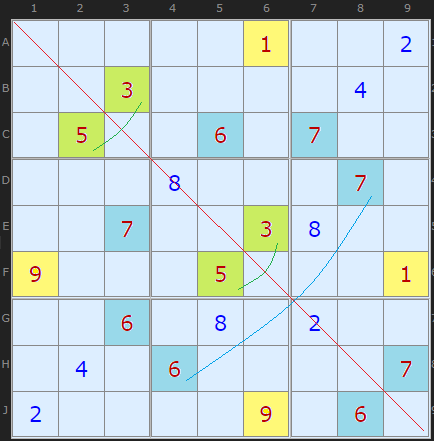
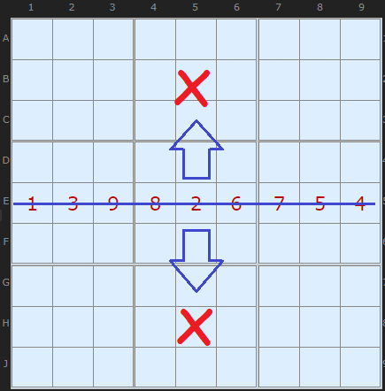
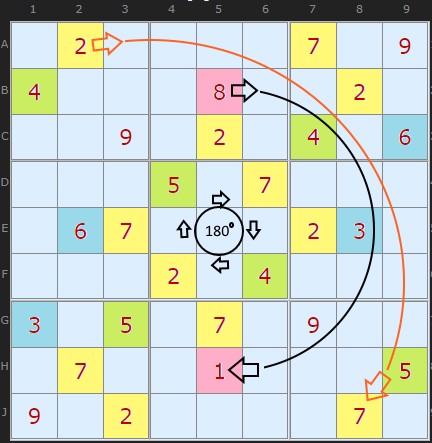
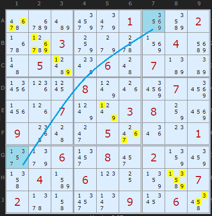
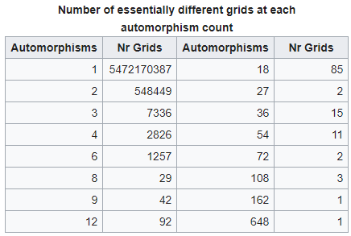
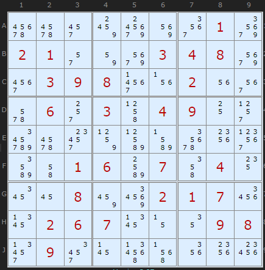

SudokuWiki.org
Strategies for Popular Number Puzzles
Gurth's Symmetrical Placement Theorem
I have been inspired to add a strategy to the solver by the excellent video by Cracking The Cryptic, posted in August 2019 on YouTube. The first instance of this technique was documented by the discussants on this thread way back in 2007, so it's been known about for a long time, but as the video mentions, few solvers test for it. However, my investigations show this is only a useful strategy in a very limited number of puzzles and, within the subset of qualifying boards, not all can be progressed with this knowledge. More later. Wikipedia has a good page on the mathematics of Sudoku and a section in Automorphic Sudokus which is the type of puzzle we are going to discuss.
Lets begin with 'Shining Mirror', the example from Simon and Mark's video which is also in the example list on the solver.
With the colouring I've employed it's clear that something very symmetrical is going on across the diagonal red line (top left to bottom right). Every clue matches either to itself or to exactly one other number.
3 maps onto 5,
6 maps onto 7 and
1 maps onto 9.
The remaining three numbers 2, 4 and 8 map onto themselves.
Gurth's Symmetrical Placement idea states that
An important point first. All the clues must have a complement - it's no good if there is a stray clue somewhere with an empty cell on the opposite side. Nor can only some be mapped 1:1, every number must map 1:1 only once. That's quite a restriction.
Second point: What is a symmetry? If you rotate a puzzle 90 degrees it will look like a completely different puzzle, especially if is on a different page in a book. However, it will have the same grade and will solve in exactly the same way in a solver. Changing all the numbers, eg from 9s into 1s, 8s into 2s, will have the same non-effect. Same puzzle in essence. The technical word for this is Automorphism.
- if a puzzles clues are symmetrical and
- the puzzle has a unique solution, then
- The solution will also be symmetrical.
An important point first. All the clues must have a complement - it's no good if there is a stray clue somewhere with an empty cell on the opposite side. Nor can only some be mapped 1:1, every number must map 1:1 only once. That's quite a restriction.
Second point: What is a symmetry? If you rotate a puzzle 90 degrees it will look like a completely different puzzle, especially if is on a different page in a book. However, it will have the same grade and will solve in exactly the same way in a solver. Changing all the numbers, eg from 9s into 1s, 8s into 2s, will have the same non-effect. Same puzzle in essence. The technical word for this is Automorphism.

Lets briefly consider vertical and horizontal reflection. Because the axis of the reflection is along an entire row, row E, every number 1 to 9 must be in that row and along that axis. That means that the 1:1 mapping for each number will be for all numbers. That makes it impossible to have a full board with that property though-out. So we can forget vertical and horizontal as potential symmetries.

Lets take a look at a rotational symmetry, this one a full half turn or 180°. This is more difficult to spot in the wild, it takes some staring to see that every clue apart from 9, maps only onto one other number, if you rotate around the center cell by a half turn. I have coloured the mappings. We can see that since 9 alone maps to itself, the center cell E5 must be 9. This cell is the only cell that stands still under the rotation. We'd have spotted that anyway, since it is the last available number in that cell (Naked Single). Elswhere
1 maps onto 8,
2 maps onto 7,
3 maps onto 6 and
4 maps onto 5.
Why is the Theorem True?
If a true symmetrical placement exists then we will get back the original puzzle after doing both the reflection or rotation and then the mapping (permutation). These two steps done in sequence will return the puzzle to the original state. Gurth's observation is that if the subset of the board which are the clues have this property, then the entire solved puzzle will as well.
In order for this assertion to be false, we have to show that there is a way of filling in the puzzle in such a way that the symmetry is broken. This can only be done if there is more than one solution. If that argument sounds a little circular, then do have a watch of the video which shows a proof by contradiction.
How useful is this strategy?

Somewhat. In my original implementation in 2019 I only concentrated on direct eliminations. However in late 2025 it was improved to removed all mirrored candidates after any successful strategy. This considerably reduces the complexity of Gurth-compliant puzzles. But these puzzles are still few and far between.
Take a look at Shining Mirror when the new board is freshly loaded and "Take Step" has been clicked once to get to "Show Possibles". This is the first initial clear out of candidates based on the clues. If the puzzle is Gurth-compatible then not only will the clues and the solution be symmetrical and map 1:1 but the entire candidate distribution will as well! This means that we can make no more useful eliminations anywhere on the board that have not already been eliminated by the clues!
An example is A7 which maps by reflection into G1. The remaining candidates in A7 are {3,5,6,9} and these map 1:1 to G1's possibles {5,3,7,1}
The only cells where eliminations are useful are in the cells that map to themselves in reflection, in this case the diagonal. Now, for Shining Mirror, it is necessary to use Gurth's idea to crack open the puzzle. But it is only possible because these cells are restricted to 3 numbers. The eliminations are shown in yellow.
For the rotated puzzle we only have one cell that maps to itself (E5). I believe this example was specially created to show a possible Gurth-compatible example in rotation, but it solves trivially. I would love to find more examples and I hope readers can send them in. I suspect that hard puzzles that can use Gurth's idea are very few and far between.
Update: Riddle of Sho is a rotational 'Gurth' puzzle and the solver finds three eliminations in different steps.

To give an idea of the search space I've reproduced this table from the wikipedia page. These figures are for canonical puzzles - which is really the entire universe of possible boards. Since this is the total for every kind of symmetry it would be better to know what fraction are diagonal and rotational symmetries only. Perhaps readers can help and it would improve the estimate how often this likely to be seen.
So while Gurth's observation is facinating, I suspect it is too esoteric to be useful, but it does deepen our understanding of the nature of the puzzle. In any case, the solver will now alert the user to a compatible puzzle and insert the strategy into this list.
Update November 2019

I was wondering how to alert the user to a potential Gurth puzzle when it lacks one mapping. To be safe and not crash the solver I've put in a test to negate detection in this case.
(Also fixed a bug with the mirrored Gurth eliminations)
Dominique Provent has sent me a nice example set of puzzles that use Gurth's Theorem. All are unsolvable without the trick being employed.
Comments
Email addresses are never displayed, but they are required to confirm your comments. When you enter your name and email address, you'll be sent a link to confirm your comment. Line breaks and paragraphs are automatically converted - no need to use <p> or <br> tags.
... by: goran
... by: Sanjay
I sometimes use this solver to make progress, even when the puzzle has additional constraints. In this case, there are the thermo(s), by manually editing the options as we go through the solve. I typically disable the options that rely on uniqueness (like the unique rectangles, extended unique rects and hidden unique rects).
The reason I bring this to your attention is that, your solver detected a Gurths incorrectly, even after I edited the options that break the symmetry. (Explicitly, R2C3 is odd, and R3C2 is unconstrained).
I am reproducing the text from "Email This Board" below for reference.
Click on this link
... by: sscg13
I have a program that can do so, and it takes a couple of seconds per puzzle.
For example, Golden Nugget and Easter Monster are not isomorphic to any symmetric-clued puzzles (too bad).
... by: James
... by: Mr Cats
You can switch around rows within a tier or columns within a stack while preserving uniqueness (in addition to swapping tiers or stacks); therefore if a grid is solvable using Gurth's theorem while the board is nice and symmetric, it must somehow retain that aspect of symmetricality under such transformations. Is there a way to determine if a given sudoku can be transformed into a symmetric sudoku, so that you may apply Gurths theorem in some (albeit tangled) way? Is there a test for "hidden" symmetricality?
There are (3!^4)^2 = 1679616 different ways to transform a grid by swapping rows within tiers, columns within stacks, and tiers and stacks themselves; it would be impractical to check each individual transformation. I imagine there must be *some* invariant per board which can be calculated that determines symmetricality.
... by: Jesse Chisholm
It seems the pattern you describe for this puzzle (Update November 2019) should work to alert on this style.
* E5 is not a given clue.
* there is a digit not represented in the given clues
* all eight other digits fit the Gurth 180-degree rotational symmetry pattern.
> alert with 'guess' that the missing digit 'might' go in E5.
-Jesse
... by: mturner
... by: Ralp
If so, the solver currently (2020/03/15) doesnt appear to support this as "Shining Mirror" moved up by 3 columns does not detect this method or solve at all.
Proof: sudokuwiki.org/sudoku.htm?bd=000800070007003800900050001006080200040600007200009060000001002003000040050060700
... by: MarcT
... by: pie314271
That said, I'm not even sure about this, because when I throw it in the Solve Path now, it works, but running through the steps manually gives an infinite loop (error).
~pie314271
UPDATE: Ok now fixed! Plus there was a keyboard break in the code which is a no-no for a server side program. Probably causing the hang.
... by: Pieter, Newtown, Australia
Interesting theorem.
I noticed the "Load Sudoku" link is hiding behind the bottom of the puzzle (W10/Firefox) AND is incorrect - the "sudoku.htm?bd=" bit is missing.
Also, in the paragraph "An example is A7 which maps by reflection into G1. The remaining candidates in A7 are {3,5,6,9} and these map 1:1 to G1's possibles {1,3,5,7}", since this page is documentation of an explanatory nature, may I suggest that the order of the candidates in the last bit reads "... these map 1:1 to G1's possibles {5,3,7,1}", reflecting the 1:1 mapping.
Also, I noticed the footer to this page is not showing the number of page views.
Thanks
Ciao, Pieter